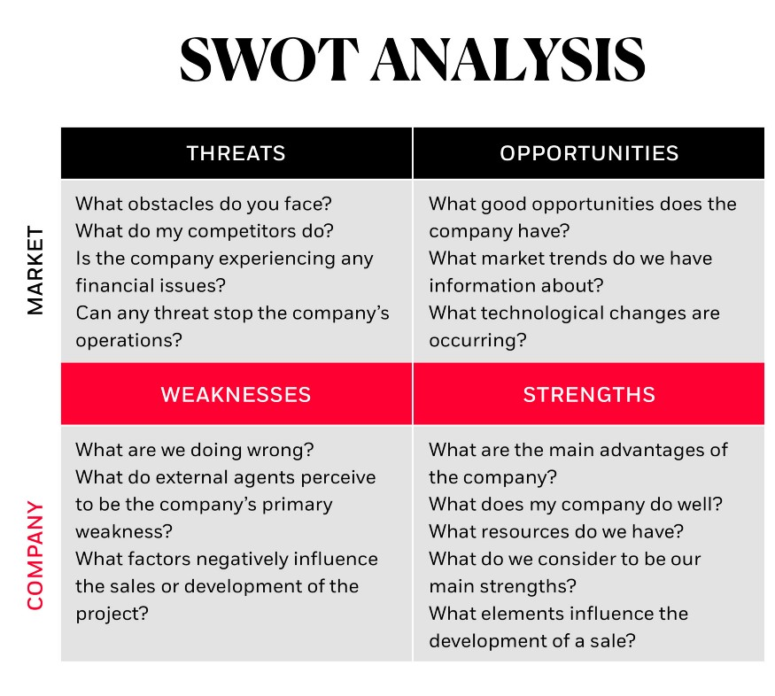

What is marketing? Marketing is about meeting the needs and wants of customers; Marketing is a business-wide function – it is not something that operates alone from other business activities. Marketing is about understanding customers and finding ways to provide products or services which customers demand. Marketing sits at the intersection of the business and the customer – the great arbiter of the self interests of the business and the needs of the buyer. There are several types and sub-types of marketing, digital and offline. You should determine and pursue the ones that work best for you.
What are the steps to a successful marketing plan?
1. Conducting Situational Analysis
The first thing you need to do when developing your digital marketing
plan is to carry out an internal and external analysis (SWOT analysis)
of the firm. A useful framework for this is the SWOT analysis that
allows you to look at the strengths, weaknesses, opportunities, and
weaknesses for your company and the market at large. You need to be
familiar with the ecosystem you operate in, what your customers’ needs
are, and where they get addressed. This analysis is equally qualitative
as it is quantitative through looking at factors such as digital habits,
intermediaries, influencers, and more.

Implementing benchmarking techniques that aim to identify the best
digital practices and applying them to the business is an increasingly
prominent part of the overall corporate strategy. You also need to
conduct an internal study to know what your company’s situation is like
in the digital age: is your website customer-oriented? How is the
usability and browsing experience? Do you update your blog periodically?
What is your website’s current positioning? And what is your social
media presence?
2. Establish Digital Marketing Goals
Once you have your place in the market and your strong points in mind,
work on establishing some goals to have a clear idea of where your
actions should take you. Everything you plan has to work towards meeting
those goals. You can work on developing this part of your digital
marketing plan with the SMART goals framework in mind: specific,
measurable, attainable, relevant, and timely goals.
Here’s an example:
Not a SMART objective:
“I want to increase the number of visits to my website.”
SMART objective:
“I want to reach 20,000 visits a month on my website every month within
three months. To do so, I’m going to do X, Y, and Z.”
3. Define the marketing strategy
Once you’ve defined your business objectives, what are you going to do
to achieve them? Personalization is becoming increasingly important in
digital marketing. When it comes to defining your strategy for carrying
out your plan, keep these factors in mind:
– Segmenting your target audience: Know who you want to
address, what their tastes, needs, or preferences are, where are you
looking to meet their expectations, etc. This is the time to create your
buyer persona.
– Positioning: To achieve proper positioning, it’s
crucial that you are very clear (and reach your audience in the same
way) about what your value proposition is and what it entails. In short,
it’s why the consumer should choose you and not the competition. You
need to know how you’re going to communicate your unique value
proposition and how to do so appropriately in the channels where your
audience is present (social media, blogs, email marketing, and more). –
Content strategy: This is important for creating, distributing, and
managing original content that attracts users and positions the brand as
referential in users’ top of mind. Besides, you also have to map out a
specific communications plan (content marketing) for every channel. Some
of the tools we use to execute this strategy are:
1. Keyword research:
This involves identifying appropriate keywords for us to use correctly
in our content to organically improve our SEO positioning. This is
imperative for every content strategy if you want users to find you on
search engines.
2. Content calendar: A content calendar is key for
ensuring your strategy makes sense. It provides value; it lets you think
long-term and optimize your resources, help create ideas, and more. In a
content calendar, you should include the date of publication, author,
post topic, keyword, the tags to use/take into consideration, and so on.
3. Social posting: Writing an article and not promoting
it on social media is a mistake. It’s not spamming but instead planning
out what you are going to publish and when on every social media
platform with the copies best suited for each one, all while having the
ideal number of characters, links, hashtags, and more.
4. Digital Strategies and Tactics
Today, considering that the number of channels to manage is multiplying and the amount of information we get about our customers is increasing, it’s critical we use Marketing Automation tools that let you automate your marketing campaigns. Thanks to these tactics, you’ll be able to create workflows that will allow you to create hundreds of campaigns with mere clicks. You’ll be able to personalize messages based on your buyer persona, increasing your chances for success; not only that, you’ll be able to take them, depending on their interactions with the brand, towards the moment of purchase. Technology has turned into a fundamental tool for implementing digital strategies, making it critical for you to learn to get the most out of it.
5. Measuring Results and KPIs
The work doesn’t stop after you’ve designed and implemented your digital marketing strategy. The next step is one of the most important: analyzing the results. Analytics has turned into a critical pillar for successfully optimizing digital marketing performance and spending. You have to measure every action using KPIs to figure out if you earned the ROI you expected. Measuring the effectiveness of the strategies and activities you implemented in your digital marketing will help you correct what doesn’t work to achieve the goals you set. Make sure you have an effective real-time data visualization system. The digital world evolves rapidly, so you need to be on the lookout at all times to identify opportunities and room for improvement in an instant. Keep these steps in mind when creating your digital marketing plan and don’t leave anything to chance; it’s your greatest enemy if you’re looking to position yourself and boost your presence in the digital space. Likewise, keep in mind that technology can turn into your greatest ally to create personalized, automated, and ultimately, successfully marketing campaigns. As the task gets complicated, the new tools out there let you simplify your work and boost your performance.